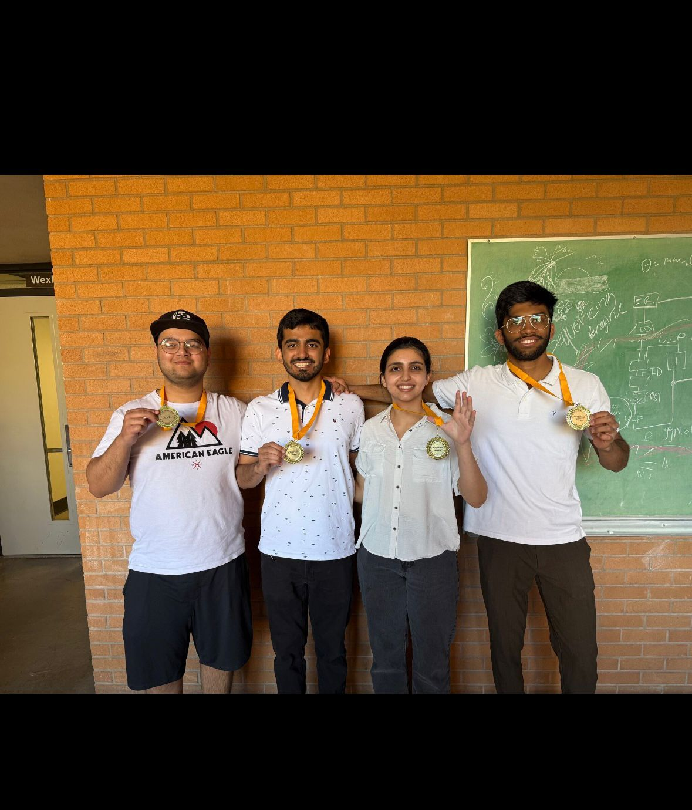
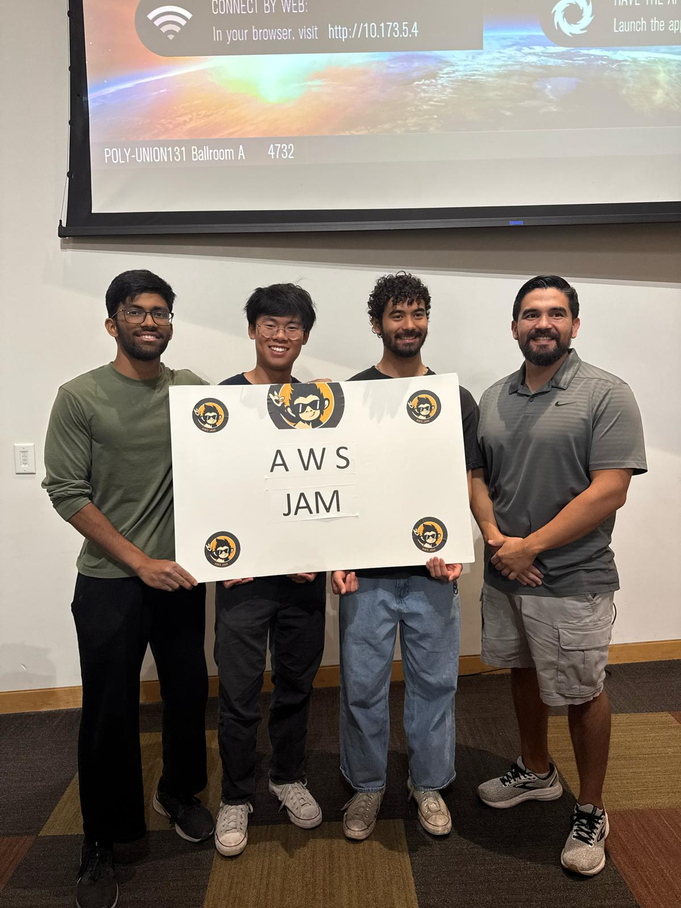
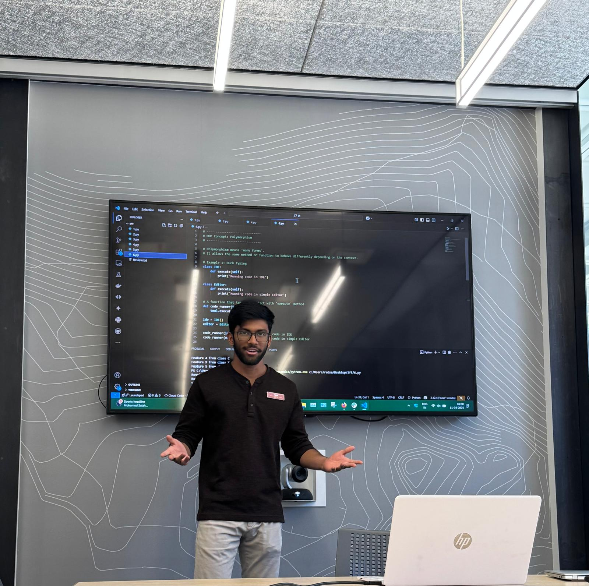
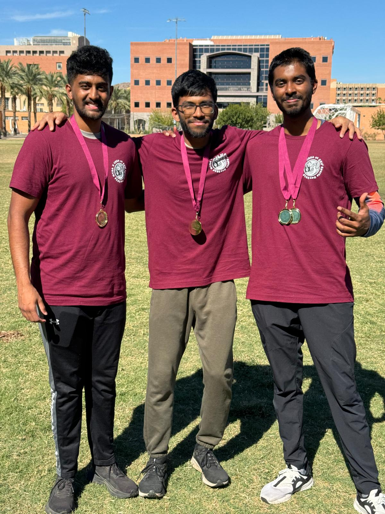

I'm an Information Technology student at Arizona State University, graduated with a 3.98 GPA and consistent recognition on the Dean's List and won the Moeur Award. I'm passionate about building scalable software systems and exploring the intersection of artificial intelligence and software engineering.
My experience spans full-stack development and applied machine learning. I've built systems like SmartLedger, developed high-accuracy deep learning models, and engineered a RAG-based AI assistant for semantic document search. I approach every project with a user-first mindset, focusing on solving real problems, whether that's reducing manual effort, improving data reliability, or enabling faster access to information. I enjoy taking ideas from design to deployment, while optimizing for performance, scalability, and intuitive user experience.
Professionally, I've worked as a Data Analyst Intern, where I automated data pipelines, validated datasets using SQL, and built web scraping tools to improve data quality. As an Executive Engineering Tutor at ASU, I mentor 20+ students weekly in Python, databases, and systems, strengthening both my technical and communication skills.
Arizona State University
GPA: 3.98 / 4.0 • Dean's List: 7 semesters
Relevant Coursework:
Meta
Focused on backend development concepts including APIs, databases, authentication, and scalable server-side applications.
Issued Nov 2025DeepLearning.AI & Stanford Online
Covered supervised learning, neural networks, and practical ML workflows, with hands-on projects using Python.
Issued Aug 2025Alteryx
Demonstrated proficiency in building end-to-end data workflows using Alteryx Designer. Experienced in data preparation, transformation, joins, aggregations, and analytics automation for scalable data processing.
Issued Dec 2025Gained practical experience in managing projects using Agile and traditional methodologies. Covered project planning, stakeholder communication, risk management, timelines, and execution using industry-standard tools and frameworks.
Issued Dec 2025IBM
Learned core data engineering concepts including data pipelines, ETL processes, data warehousing, and cloud-based data systems. Worked with structured data workflows to support scalable, data-driven applications.
Issued Dec 2025Microsoft
Explored Microsoft Dynamics 365 fundamentals, including CRM and ERP capabilities. Learned how Dynamics supports business processes, data integration, customer insights, and enterprise application workflows.
Issued Dec 2025Full-stack bookkeeping system with AI-based expense categorization, reducing manual tracking and simplifying financial management for users.
Deep learning model to detect plant diseases from images with 98.2%, using A/B testing across model variants to improve accuracy and enable fast, reliable diagnosis.
AI-powered document search system that retrieves precise answers from PDFs, reducing manual lookup time by 80% and improving information access.
Built an asynchronous job processing system using Java and Spring Boot, enabling reliable background task execution with queueing, retries, and scheduling.
Architected a scalable 3-tier full-stack trading simulator using Flask and AWS. Implemented real-time price generation and secure auth, enabling effective portfolio management training.
Built an LSTM-based deep learning model to classify IMDB movie reviews as positive or negative. Achieved ~88% test accuracy through tokenization, embeddings, and sequence modeling.
Developed a regression-based model to predict housing prices using features such as square footage, BHK, bathrooms, and location. Achieved an R² score of ~0.86 after data cleaning and feature engineering.
Conducted exploratory data analysis to identify relationships between movie attributes and gross revenue. Found strong correlations between budget, votes, and earnings using statistical analysis and visualization.

Analyzed how COVID-19 and shifting market dynamics impacted U.S. office leasing and asking rents from 2018-2024. During a weekend-long datathon, our team consolidated and cleaned multiple commercial real-estate datasets (leasing activity, availability, building class, and macroeconomic indicators) into a unified modeling dataset of 504 complete market observations.
Performed exploratory data analysis to uncover post-COVID patterns across sectors and metros, including faster recovery in Texas markets, resilience in Class A assets, and contrasting dynamics between cities like Miami and San Francisco. Built and evaluated multiple regression specifications in SAS, including main-effects, interaction, and nonlinear models, carefully balancing explanatory power and model stability. Delivered a parsimonious main-effects linear regression model explaining approximately 72% of rent variation, with clean diagnostics and minimal multicollinearity.
The final model distinguished the different pricing impacts of direct versus sublet availability and quantified demand momentum via leasing volume, producing actionable insights for pricing, underwriting, and leasing strategy.
AWS Jam is a competitive, gamified cloud learning experience where participants solve real-world infrastructure and application challenges using AWS services in a sandboxed environment. Competing in a team-based AWS Jam Event at ASU, I secured 2nd place by rapidly designing, deploying, and troubleshooting cloud solutions under time constraints.
Our team worked through open-ended scenarios involving core AWS services such as Amazon EC2, S3, RDS, and AWS Lambda, addressing challenges across infrastructure provisioning, security configuration, and system optimization. Performance was scored based on accuracy and speed, with live leaderboards reinforcing both technical execution and collaborative problem-solving.
This experience strengthened my practical cloud engineering skills, reinforced AWS best practices, and demonstrated my ability to perform effectively in a competitive, fast-paced, real-world problem-solving environment.


Selected as an Executive Engineering Tutor within the Fulton Schools of Engineering Tutoring Centers, a dynamic academic support environment. Supported students across multiple learning formats while fostering an engaging atmosphere centered on active learning, critical thinking, and problem-solving. This role strengthened my technical communication, leadership, mentorship, and cross-team collaboration skills, while deepening my ability to explain complex technical concepts clearly to diverse learners.
Delivered in-person and virtual tutoring to 20-30 students weekly in Python, Java, SQL, Database Management Systems, and Linux, reinforcing core computer science and engineering concepts aligned with modern industry practices. Assisted students in overcoming academic challenges in high-stakes coursework through guided problem-solving, conceptual breakdowns, and real-world application of theory.
Collaborated closely with faculty and a team of 10+ Learning Assistants to coordinate academic support efforts, align tutoring strategies with course objectives, and improve communication between instructors and students. Contributed to the development and refinement of course materials, participated in academic discussion boards to provide timely learning support, and attended weekly leadership meetings to enhance tutoring effectiveness and program operations.
Served as a campus tour guide for Arizona State University's Student Admissions & Relations team, leading prospective students and their families through the ASU campus. Delivered comprehensive tours covering academic buildings, residence halls, student resources, and campus life while answering questions related to academics, housing, involvement opportunities, and navigating the university environment.
Provided firsthand insights and practical guidance to help incoming students transition smoothly during their initial days at ASU, offering recommendations on campus resources, student organizations, and academic support. Utilized Salesforce for family check-in and attendance tracking at the start of each tour.
This role significantly strengthened my communication, interpersonal, public speaking, and customer-facing skills, as well as my ability to adapt explanations to diverse audiences in a professional setting.

An active sports enthusiast with a strong interest in athletics. Competed in Sun Devil Intramural Basketball at Arizona State University, playing in organized league settings that emphasized teamwork, strategy, and performance under pressure.
Previously participated in district-level basketball competitions in India, gaining early experience in competitive team sports and disciplined training environments. Also participated in a sports day event hosted by an ASU student club, where my team secured 1st place, demonstrating leadership, coordination, and competitive drive.
Through sustained involvement in competitive sports, developed strong team collaboration, communication, resilience, and time-management skills, successfully balancing athletic commitments alongside academic and professional responsibilities.
Participated in conferences organized by I.I.M.U.N., the world's largest youth-run organization in India, dedicated to empowering young individuals to engage with global and national challenges through dialogue and diplomacy. I.I.M.U.N. operates across 35 countries and 220 cities, touching over 50 million lives through educational initiatives spanning workshops, conferences, literature festivals, and policy simulations.
Engaged in structured simulations of international and national governing bodies, including the United Nations and Indian Parliament, where I debated policy issues, analyzed geopolitical scenarios, and collaborated with diverse delegates to design realistic, solution-driven resolutions. These experiences emphasized critical thinking, persuasive communication, negotiation, and collaborative problem-solving under formal parliamentary procedures.
Participation in I.I.M.U.N. strengthened my public speaking, diplomacy, and leadership skills, while exposing me to global perspectives and enabling meaningful interaction with students from varied academic, cultural, and socioeconomic backgrounds. The program played a key role in shaping my ability to articulate complex ideas clearly, think globally, and engage constructively in high-stakes discussions.